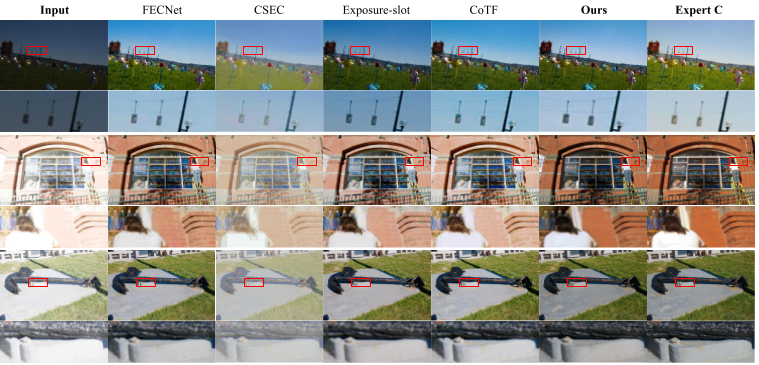

Exposure correction aims to recover visually faithful images from under- or over-exposed inputs. Existing methods often entangle exposure-dependent illumination with intrinsic scene reflectance, leading to unstable restoration. We revisit this task from the perspective of intrinsic image decomposition and propose Exposure-Aware Intrinsic Image Decomposition (EA-IID), a framework that explicitly enforces exposure-invariant albedo while using shading to model the residual photometric transformation toward canonical exposure. To achieve this, our approach leverages uncertainty-aware pseudo-supervision and cross-exposure consistency regularization, enabling robust learning without ground-truth albedo annotations. Extensive experiments show that EA-IID improves albedo consistency across exposure variations and achieves strong exposure-correction performance on multiple benchmarks, highlighting the benefit of explicitly modeling exposure-invariant intrinsic structure.

The input is decomposed into albedo and shading. The albedo remains nearly invariant across different exposure conditions.


Qualitative comparison against state-of-the-art exposure correction methods, evaluated against expert-retouched references.
